How much better is NNT ?
| Trial | Mortality(3yrs) | NNT(3yrs) |
|---|---|---|
| MADIT2 | 31 | 11 |
| SCD-HeFT (ICM) | 28 | 18 |
| SCD-HeFT (NICM) | 15.8 | 25 |
| MADIT | 42 | 4 |
| MUSTT | 35.4 | 5 |
| AVID | 35.9 | 9 |
| CIDS | 27 | 27 |
| CASH | 39 | 13 |
| Metaanalysis | 32 | 13 |
Betts et al. Absolute risk reduction in total mortality with implantable cardioverter defibrillators: analysis of primary and secondary prevention trial data to aid risk/benefit analysis. Europace 2013; 15 (6): 813-819
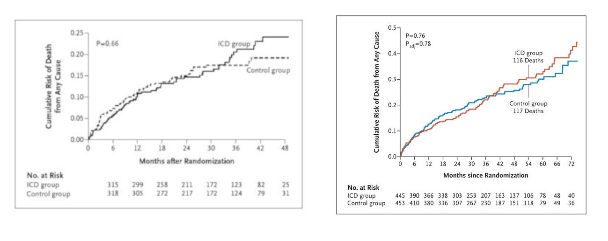
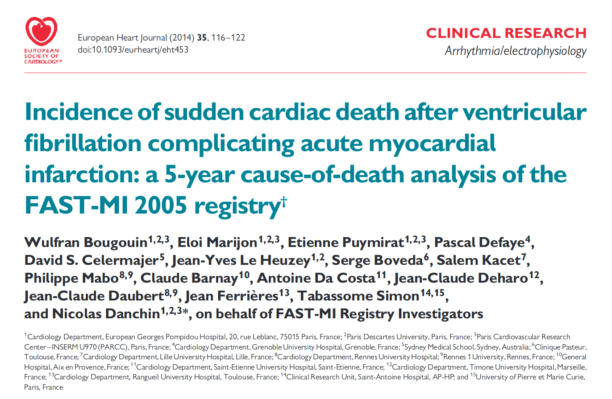
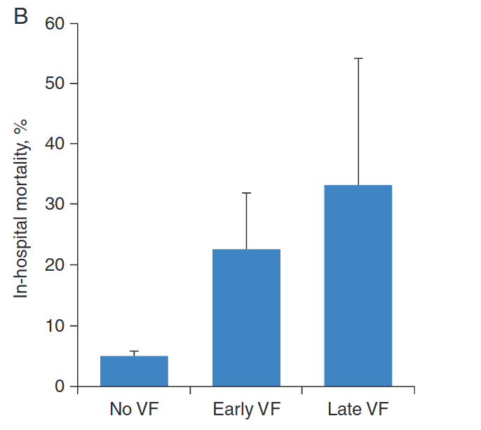
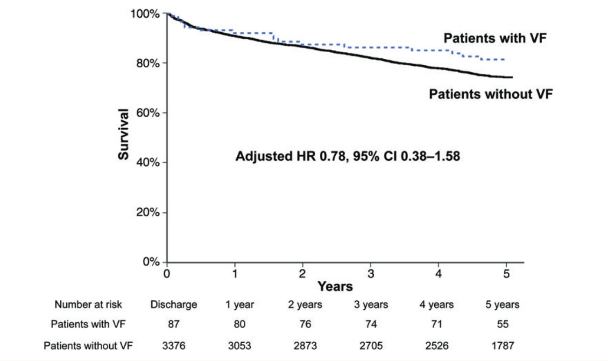
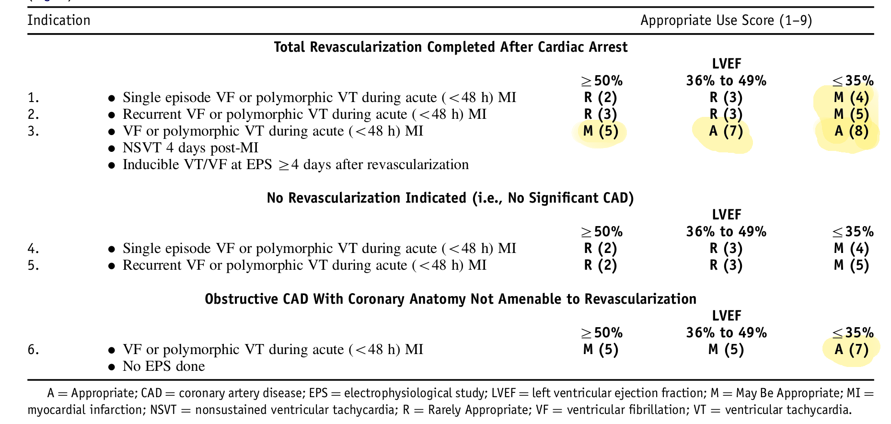
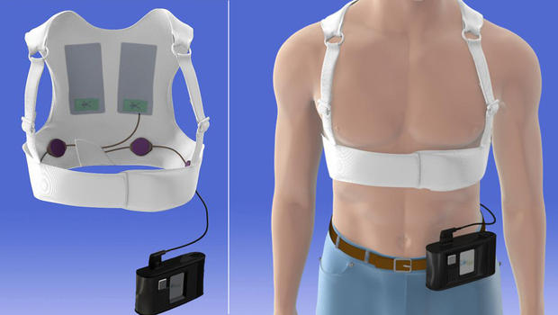
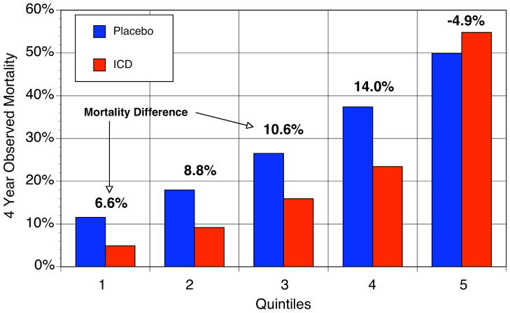
Levy et al. Circulation 2009;120:835-842
Goldenberg - MADIT II
Goldenberg et al. JACC 2008;51:288-296
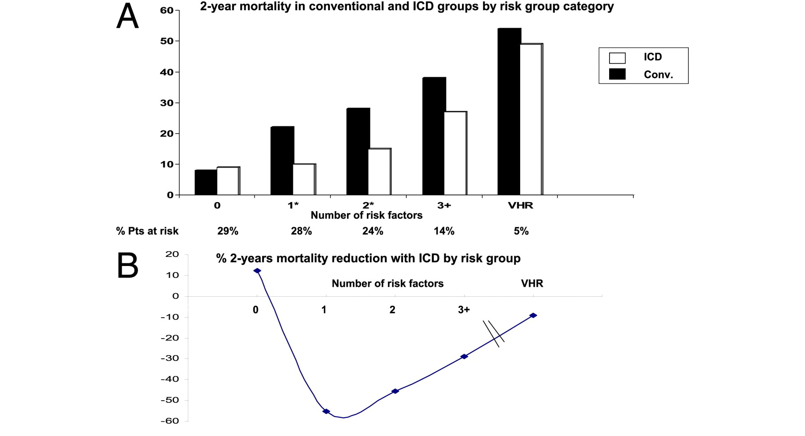
Seattle Heart Failure Model may be a better predictor
Application and comparison of the FADES, MADIT, and SHFM-D risk models for risk stratification of prophylactic implantable cardioverter-defibrillator treatment. Europace (2017) 19 (1): 72-80
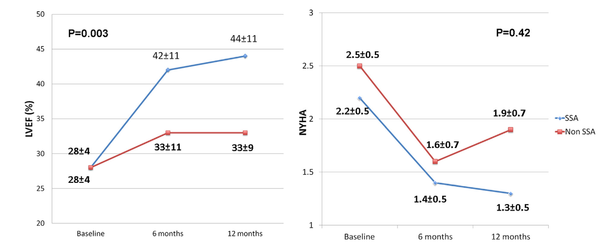
Ablation of frequent PVC in patients meeting criteria for primary prevention ICD implant: Safety of withholding the implant. Heart Rhythm 2015;12:2434–2442
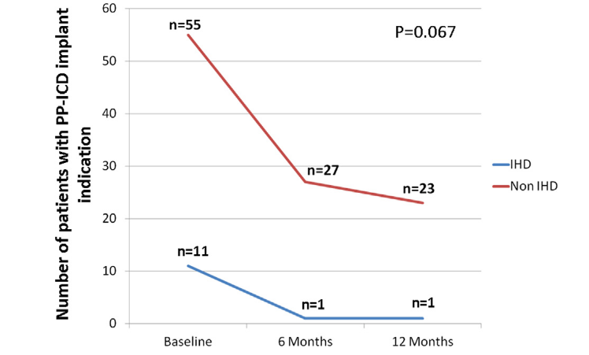
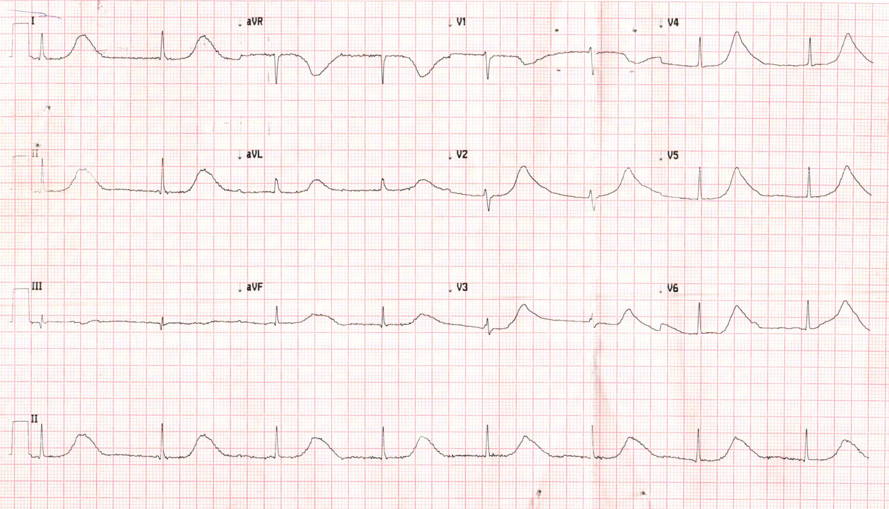